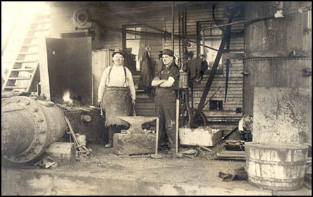

| Notice the two blacksmiths, one handled the metal, the other swung the
sledgehammer, the large boiler, the little single cylinder steam engine behind the sledge-man in
black, the leather belts, the wheels/pulleys, forced air blower near the top of the forge, and even the sheet
of iron to keep the fire in shadow so the smith could better
tell the exact color of the metal as he worked it. |
Page Under Construction
|
|